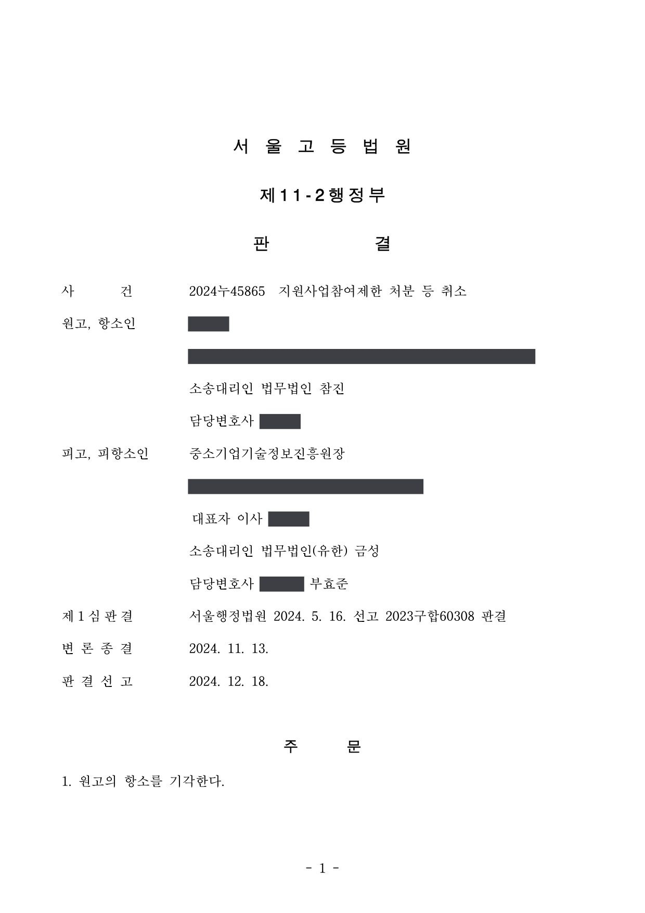
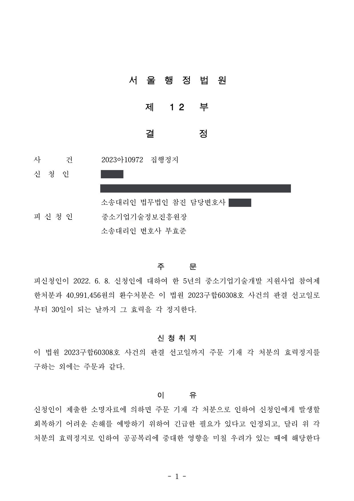

국가연구개발사업 참여제한 및 정부출연금 환수처분 취소소송
서울행정법원 2023구합60308 · 서울고등법원 2024누45865 · 서울행정법원 2023아10972 · 담당변호사 부효준
판결문



사건의 요지
「중소기업 기술혁신 촉진법」에 따른 참여제한 및 정부출연금 환수처분의 적법성이 다투어진 사건입니다. 과제 수행 실태에 관한 사실 인정과 제재 기준의 적용이 쟁점이었습니다.
사건의 주요 내용
개인사업자인 원고는 2016년 창업성장기술개발사업 창조경제 연계과제에 '휴대용 분석장비용 메인카드 소프트웨어·설계기술 개발 과제'로 선정되어, 2016년 12월 전문기관과 개발기간 12개월(2016년 12월~2017년 11월), 정부출연금 1억 원(총 사업비 1억 2,500만 원)의 협약을 체결하였고, 과제는 2018년 4월 '성공' 판정을 받았습니다.
그러나 전문기관은 2019년 7월 제보를 받아 2020년 1월 특별점검을 실시하였고, 신규인력으로 등록된 두 명의 인건비 집행에 문제가 있음을 확인하였습니다. 2021년 9월 특별평가위원회는 참여연구원 허위 등록 후 인건비 회수(39,240,000원)와 인건비 과다계상 후 차액 회수(6,880,000원) 등 합계 46,120,000원을 용도 외로 사용하였다는 이유로 '문제있음(종료과제)' 판정을 하였고, 원고의 이의신청은 받아들여지지 않았습니다.
전문기관은 2022년 6월 구 중소기업 기술혁신 촉진법 제31조 제1항 제4호 등을 근거로 원고에게 5년의 참여제한과 46,120,000원의 환수처분을 하였고, 이의신청 심의에서 참여제한 5년을 유지하면서 환수금을 정부출연 비중(88.88%)을 적용한 40,991,456원으로 재산정하였습니다. 원고는 이의신청 심의결과의 취소를 구하는 행정심판을 청구하여 받아들여지지 않은 뒤 취소소송을 제기하였고, 1심에서 패소한 후 항소하였습니다. 함께 신청한 집행정지는 1심 판결 선고 후 30일까지 인용되었습니다.
쟁점
- 이의신청 심의결과에 대해서만 행정심판을 청구한 경우 원처분에 대한 취소소송의 제소기간을 지킨 것으로 볼 수 있는지
- 사전통지 없이 처분이 이루어졌더라도 특별평가·이의신청 과정에서 소명 기회가 있었다면 처분을 취소할 절차적 하자가 아닌지
- 인건비를 과다계상하여 지급받은 뒤 차액을 돌려받은 것이 출연금의 용도 외 사용에 해당하는지, 5년의 참여제한이 재량권을 일탈·남용한 것인지
원고의 주장
- 처분에 앞서 행정절차법에 따른 사전통지가 없었고 처분서에 근거와 이유도 제시되지 않았으므로 절차적으로 위법하다고 주장하였습니다.
- 신규인력 한 명에게 자기 돈으로 먼저 지급한 4개월분 급여를 보전받기 위해 뒤에 지급된 인건비 일부를 돌려받은 것이므로, 6,880,000원은 그 연구원에게 전액 귀속되었고 처분사유가 되지 않는다고 주장하였습니다.
- 전문기관이 공고 내용을 제대로 안내하였다면 산업기술 분류를 달리 선택하여 기존인력 인건비를 적법하게 지원받을 수 있었을 것이므로, 이러한 경위를 고려하지 않은 처분은 재량권을 일탈·남용한 것이라고 주장하였습니다.
부효준 변호사의 주장
- 본안 전 항변으로, 원고가 원처분이 아닌 이의신청 심의결과에 대해서만 행정심판을 청구하였으므로 원처분에 대한 제소기간이 지났다고 주장하였고, 제재조치위원회 개최 안내서를 공시송달한 것으로 사전통지가 이루어졌다고도 주장하였습니다.
- 실지급액을 전제로 인건비를 지원받고도 그 일부를 연구원에게서 돌려받은 것은 관리지침이 인건비를 '수행기관의 급여기준에 따른 실지급액'으로 정한 규정에 어긋나는 용도 외 사용이고, 먼저 지급한 급여를 보전하려 했다는 사정은 동기에 불과하다고 반박하였습니다.
- 용도 외 사용금액 46,120,000원은 해당연도 사업비 현금 112,500,000원의 약 40.9%로 운영요령 별표 3이 '5년 이내'의 참여제한을 정한 30% 초과 구간에 해당하고, 기술분류는 핵심개발기술과의 관련성에 따라 원고가 스스로 선택한 것이어서 전문기관의 귀책사유가 없다고 주장하였습니다.
법원의 판단
1심(서울행정법원 2023구합60308)은 전문기관의 본안 전 항변을 받아들이지 않았습니다. 처분서에 이의신청 안내만 있었고 원고가 심의결과를 원처분으로 착오하여 행정심판을 청구하였을 여지가 있으며 행정심판위원회도 처분의 위법성을 실질적으로 판단한 점 등을 들어, 제소기간을 지키지 못하였다고 볼 수 없다고 하였습니다. 사전통지에 관해서는 제재조치위원회 개최 안내서는 처분 내용의 통지가 아니므로 사전통지 의무 위반이 있다고 보았으나, 특별평가와 이의신청 과정에서 여러 차례 소명 기회가 주어져 방어권 행사에 실질적 지장이 없었으므로 취소 사유는 아니라고 판단하였습니다.
처분사유에 관해서는 실지급액이 아닌 금액을 인건비로 과다계상하여 지원받은 뒤 일부를 돌려받은 것은 용도 외 사용에 해당하고, 먼저 지급한 급여를 보전하려 했다는 사정은 동기에 불과하다고 보았습니다. 재량권에 관해서는 용도 외 사용 비율이 약 40.9%에 이르고 기술분류 선택에 전문기관의 귀책이 없으며, 참여제한은 출연금을 지원받을 기회를 제한하는 데 그친다는 점 등을 들어 과도하지 않다고 하여 청구를 모두 받아들이지 않았습니다.
항소심(서울고등법원 2024누45865)은 1심 판단을 그대로 유지하면서, 수사 과정에서 부정사용 의도가 없다고 인정되었다는 원고 주장에 대해 제재처분은 형벌과 달리 고의·과실이 없어도 부과할 수 있다는 점(대법원 2021. 2. 25. 선고 2020두51587 판결)과 재량권 일탈·남용의 증명책임은 처분의 위법을 다투는 원고에게 있다는 점을 덧붙였습니다. 원고가 든 대법원 2018두56237 판결은 학생연구원 공동관리계좌 사안으로 이 사건과 사실관계가 다르다고 보아 항소를 받아들이지 않았습니다.
행정청이 처분절차에서 관계 법령의 절차 규정을 위반하여 절차적 정당성이 상실된 경우에는 해당 처분은 위법하고 원칙적으로 취소하여야 한다. 다만 처분상대방이나 관계인의 의견진술권이나 방어권 행사에 실질적으로 지장이 초래되었다고 볼 수 없는 특별한 사정이 있는 경우에는, 절차 규정 위반으로 인하여 처분절차의 절차적 정당성이 상실되었다고 볼 수 없으므로 해당 처분을 취소할 것은 아니다(대법원 2018. 3. 13. 선고 2016두33339 판결, 대법원 2021. 1. 28. 선고 2019두55392 판결 등 참조).
따라서 이 사건 각 처분에 행정절차법이 정한 사전통지 절차를 준수하지 않은 위법이 있다고 하더라도, 그러한 절차규정 위반으로 인하여 처분절차의 절차적 정당성이 상실되었다고 볼 수는 없다. 결국 원고의 이 부분 주장도 받아들일 수 없다.
서울행정법원 2023구합60308 판결 이유 '4. 나. 3) 처분의 절차 위반을 이유로 한 취소 여부' (서울고등법원 2024누45865 판결이 인용)
형벌에 있어서는 형법 원칙에 따라 고의가 있어야 처벌할 수 있고, 과실범은 법률에 특별한 규정이 있는 경우에 한하여 처벌되는 것(대법원 1983. 12. 13. 선고 83도2467 판결 등 참조)과는 달리, 행정법규 위반에 대한 제재처분은 행정 목적의 달성을 위하여 행정법규 위반이라는 객관적 사실에 착안하여 가하는 제재여서 반드시 현실적인 행위자가 아니라도 법령상 책임자로 규정된 자에게 부과되며, 특별한 사정이 없는 한 위반자에게 고의나 과실이 없더라도 부과할 수 있는 것이므로(대법원 2021. 2. 25. 선고 2020두51587 판결 등 참조), 이 부분 원고 주장 사정은 행정법규 위반에 대한 형벌이 아닌 이 사건 각 처분의 적법성을 판단하는 행정사건인 이 사건에서 이 사건 각 처분이 위법하다고 판단할 만한 직접적인 근거가 되기는 어렵다.
서울고등법원 2024누45865 판결 이유 '1. 정당한 제1심 판결 인용과 추가 등' 중 처분사유 존부에 관하여 추가한 부분
특히 이 사건 운영요령 제30조 제1항 [별표 3]은 용도 외 사용 금액이 해당연도 사업비 현금에서 차지하는 비율에 따라 그 제한 기간을 달리 정하여, 그 비율이 20% 이하인 경우 제한 기간을 '3년 이내'로, 20% 초과 30% 이하인 경우 '4년 이내'로, 30% 초과인 경우 '5년 이내'로 정하고 있는데, 원고의 경우 그 비율이 약 40.9%(= 용도 외 사용금액 46,120,000원 ÷ 해당연도 사업비 현금 112,500,000원)에 육박하는 점 등에 비추어 볼 때, 이 사건 각 처분이 과도하다고 보기 어렵다.
서울행정법원 2023구합60308 판결 이유 '4. 라. 재량권 일탈·남용 여부 — 2) 다)' (서울고등법원 2024누45865 판결이 인용)
※ 판결 이유 가운데 이 사건의 판단 기준이 된 부분을 그대로 옮긴 것으로, 당사자 이름 등은 가렸습니다.
이 사건이 보여 주는 것
참여연구원을 허위로 등록하거나 인건비를 실지급액보다 많이 계상한 뒤 차액을 돌려받는 방식은, 그 돈을 과제 수행에 썼거나 먼저 지급한 급여를 보전하려는 목적이었다고 해도 출연금의 용도 외 사용으로 평가됩니다. 형사 절차에서 고의가 인정되지 않았다는 사정도 제재처분의 적법성 판단에는 직접 영향을 주지 않습니다. 용도 외 사용금액이 해당연도 사업비 현금의 30%를 넘으면 참여제한 상한이 5년까지 올라가므로, 금액 비율이 제재 수준을 좌우합니다.
절차 면에서는, 전문기관이 사전통지를 빠뜨렸더라도 특별평가·이의신청 단계에서 충분한 소명 기회가 있었다면 처분이 취소되지 않는다는 점, 이의신청 심의결과를 대상으로 행정심판을 청구하였더라도 원처분에 대한 제소기간을 지킨 것으로 볼 수 있다는 점이 확인되었습니다. 처분을 받은 쪽은 원처분과 심의결과 중 무엇을 다투는지 처음부터 분명히 하는 것이 안전합니다.
관련 법령구 중소기업 기술혁신 촉진법 제31조 제1항 제4호·제4항, 제32조 제1항·제3항 · 구 중소기업 기술혁신 촉진법 시행령 제20조 제2항, 제21조 제1항, 별표 2 · 구 중소기업기술개발 지원사업 운영요령 제30조 제1항, 별표 3 · 행정절차법 제21조 제1항·제4항·제5항, 제23조 제1항 · 행정심판법 제28조, 제32조 · 행정소송법 제23조(집행정지)
관련 단어참여제한출연금 환수인건비 과다계상참여연구원 허위 등록사전통지 누락절차적 하자제소기간행정심판재량권 일탈·남용고의·과실 불문창업성장기술개발사업항소심 유지집행정지
비슷한 처분을 받으셨다면
국가연구개발 제재처분은 사전통지를 받은 날부터 20일 이내에 재검토 요청 의견을 내고, 처분이 있음을 안 날부터 90일 이내에 취소소송을 제기해야 합니다. 처분서나 사전통지서를 받은 날짜부터 확인해 드립니다.